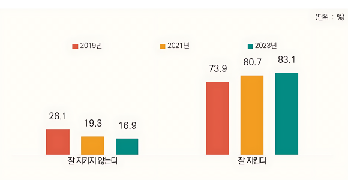
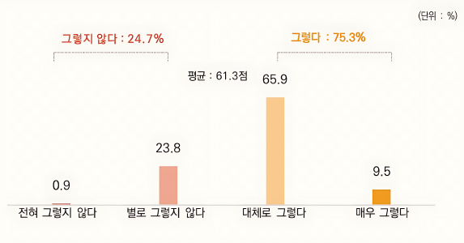

1번
다음 그래프를 보고 ㉠과 ㉡에 들어갈 알맞은 말을 각각 선택하세요.
사람들이 법을 잘 지킨다고 생각하십니까?

출처: 2023년 국민법의식 실태조사(응답자: 3,400명)
법이 나에게 손해가 되더라도 법을 지키시겠습니까?

출처: 2023년 국민법의식 실태조사(응답자: 3,400명)
조사 결과 ‘우리 사회가 법을 잘 지키고 있다’는 의견이 2019년부터 ㉠
선택하세요.
증가하다가 감소
지속적으로 감소
지속적으로 증가
하고 있습니다.
또한 법을 지키는 것이 나에게 손해가 되더라도 법을 지키겠다는 사람이 100명 중에 75명 정도로 조사되어 법을 준수하려는 사람이 ㉡
선택하세요.
많은
적은
것으로 나타났습니다.